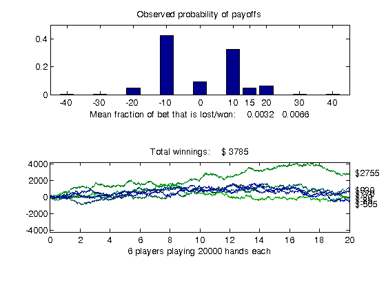

Sequential Blackjack
This demo plays the card game of blackjack, also known as 21. We simulate a number of players that are independently playing thousands of hands at a time, and display payoff statistics. Simulating the playing of blackjack is representative of Monte Carlo analysis of financial instruments. The simulation can be done completely in parallel, except for the data collection at the end.
For details about the computations, view the code for pctdemo_setup_blackjack.
Prerequisites:
Related demos:
Contents
Load the Demo Settings and the Data
We start by getting the demo difficulty level. If you want to use a different demo difficulty level, use paralleldemoconfig and then run this demo again. See Customizing the Settings for the Demos in the Parallel Computing Toolbox for full details.
difficulty = pctdemo_helper_getDefaults();
We get the number of players and the number of hands each player plays from pctdemo_setup_blackjack. The difficulty parameter controls the number of players that we simulate. You can view the code for pctdemo_setup_blackjack for full details.
[fig, numHands, numPlayers] = pctdemo_setup_blackjack(difficulty);
Run the Simulation
We use pctdemo_task_blackjack to simulate a single player who plays numHands hands, and we call that function numPlayers times to simulate all the players. Because the separate invocations of the function are independent one of another, we can easily use the Parallel Computing Toolbox to perform these simulations. You can view the code for pctdemo_task_blackjack for full details.
startTime = clock; S = zeros(numHands, numPlayers); % Preallocate for the results. for i = 1:numPlayers S(:, i) = pctdemo_task_blackjack(numHands, 1); end
Measure the Elapsed Time
The time used for the sequential simulations should be compared against the time it takes to perform the same set of calculations using the Parallel Computing Toolbox in the Distributed Blackjack demo. The elapsed time varies with the underlying hardware.
elapsedTime = etime(clock, startTime);
fprintf('Elapsed time is %2.1f seconds\n', elapsedTime);
Elapsed time is 63.3 seconds
Plot the Results
We display the expected fraction of the bet that is won or lost in each hand, along with the confidence interval. We also show the evolution of the winnings and losses of each of the players we simulate. You can view the code for pctdemo_plot_blackjack for full details.
pctdemo_plot_blackjack(fig, S);